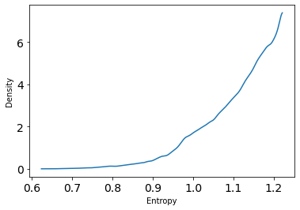

10. Big Entropy and The Generalized Linear Model
Contents

10. Big Entropy and The Generalized Linear Model¶
# Install packages that are not installed in colab
try:
import google.colab
!pip install -q watermark
except:
pass
%load_ext watermark
# Core
import numpy as np
import arviz as az
import pandas as pd
import tensorflow as tf
import tensorflow_probability as tfp
# visualization
import matplotlib.pyplot as plt
# aliases
tfd = tfp.distributions
2022-01-18 18:27:56.756350: W tensorflow/stream_executor/platform/default/dso_loader.cc:64] Could not load dynamic library 'libcudart.so.11.0'; dlerror: libcudart.so.11.0: cannot open shared object file: No such file or directory
2022-01-18 18:27:56.756384: I tensorflow/stream_executor/cuda/cudart_stub.cc:29] Ignore above cudart dlerror if you do not have a GPU set up on your machine.
%watermark -p numpy,tensorflow,tensorflow_probability,arviz,scipy,pandas
numpy : 1.21.5
tensorflow : 2.7.0
tensorflow_probability: 0.15.0
arviz : 0.11.4
scipy : 1.7.3
pandas : 1.3.5
10.1 Maximum entropy¶
Code 10.1¶
d = {'A':[0, 0, 10, 0, 0],
'B':[0, 1, 8, 1, 0],
'C':[0, 2, 6, 2, 0],
'D':[1, 2, 4, 2, 1],
'E':[2, 2, 2, 2, 2]}
p = pd.DataFrame(data=d)
Code 10.2¶
p_norm = p/p.sum(0)
Code 10.3¶
def entropy(x):
y = []
for i in x:
if i == 0:
y.append(0)
else:
y.append(i*np.log(i))
h = -sum(y)
return h
H = p_norm.apply(entropy, axis=0)
H
A -0.000000
B 0.639032
C 0.950271
D 1.470808
E 1.609438
dtype: float64
Code 10.4¶
ways = np.array([1, 90, 1260, 37800, 113400])
logwayspp = np.log(ways) / 10
10.1.2 Binomial¶
Code 10.5¶
# Build list of the candidate distributions.
p = [[1/4, 1/4, 1/4, 1/4],
[2/6, 1/6, 1/6, 2/6],
[1/6, 2/6, 2/6, 1/6],
[1/8, 4/8, 2/8, 1/8]]
# Compute expected value of each. The sum of the multiplied entries is just a dot product.
p_ev = [np.dot(i, [0, 1, 1, 2]) for i in p]
p_ev
[1.0, 1.0, 1.0, 1.0]
Code 10.6¶
# Compute entropy of each distribution
p_ent = [entropy(i) for i in p]
p_ent
[1.3862943611198906,
1.3296613488547582,
1.3296613488547582,
1.2130075659799042]
Code 10.7¶
p = 0.7
A = [(1-p)**2, p*(1-p), (1-p)*p, p**2]
A
[0.09000000000000002,
0.21000000000000002,
0.21000000000000002,
0.48999999999999994]
Code 10.8¶
-np.sum(A*np.log(A))
1.221728604109787
Code 10.9¶
def sim_p(G=1.4):
x123 = tfd.Uniform(low=0., high=1.).sample(3).numpy()
x4 = (G * np.sum(x123) - x123[1] - x123[2]) / (2 - G)
x1234 = np.concatenate((x123, [x4]))
z = np.sum(x1234)
p = x1234 / z
return - np.sum(p * np.log(p)), p
Code 10.10¶
# should re-write this using map
H = []
p = np.zeros((10**5, 4))
for rep in range(10**5):
h, p_ = sim_p()
H.append(h)
p[rep] = p_
2022-01-18 18:27:58.900051: W tensorflow/stream_executor/platform/default/dso_loader.cc:64] Could not load dynamic library 'libcuda.so.1'; dlerror: libcuda.so.1: cannot open shared object file: No such file or directory
2022-01-18 18:27:58.900083: W tensorflow/stream_executor/cuda/cuda_driver.cc:269] failed call to cuInit: UNKNOWN ERROR (303)
2022-01-18 18:27:58.900104: I tensorflow/stream_executor/cuda/cuda_diagnostics.cc:156] kernel driver does not appear to be running on this host (fv-az231-667): /proc/driver/nvidia/version does not exist
2022-01-18 18:27:58.900418: I tensorflow/core/platform/cpu_feature_guard.cc:151] This TensorFlow binary is optimized with oneAPI Deep Neural Network Library (oneDNN) to use the following CPU instructions in performance-critical operations: AVX2 AVX512F FMA
To enable them in other operations, rebuild TensorFlow with the appropriate compiler flags.
---------------------------------------------------------------------------
KeyboardInterrupt Traceback (most recent call last)
/tmp/ipykernel_2218/2183151899.py in <module>
4
5 for rep in range(10**5):
----> 6 h, p_ = sim_p()
7 H.append(h)
8 p[rep] = p_
/tmp/ipykernel_2218/1738301079.py in sim_p(G)
1 def sim_p(G=1.4):
----> 2 x123 = tfd.Uniform(low=0., high=1.).sample(3).numpy()
3 x4 = (G * np.sum(x123) - x123[1] - x123[2]) / (2 - G)
4 x1234 = np.concatenate((x123, [x4]))
5 z = np.sum(x1234)
/opt/hostedtoolcache/Python/3.7.12/x64/lib/python3.7/site-packages/tensorflow_probability/python/distributions/distribution.py in sample(self, sample_shape, seed, name, **kwargs)
1232 """
1233 with self._name_and_control_scope(name):
-> 1234 return self._call_sample_n(sample_shape, seed, **kwargs)
1235
1236 def _call_sample_and_log_prob(self, sample_shape, seed, **kwargs):
/opt/hostedtoolcache/Python/3.7.12/x64/lib/python3.7/site-packages/tensorflow_probability/python/distributions/distribution.py in _call_sample_n(self, sample_shape, seed, **kwargs)
1210 sample_shape, 'sample_shape')
1211 samples = self._sample_n(
-> 1212 n, seed=seed() if callable(seed) else seed, **kwargs)
1213 samples = tf.nest.map_structure(
1214 lambda x: tf.reshape(x, ps.concat([sample_shape, ps.shape(x)[1:]], 0)),
/opt/hostedtoolcache/Python/3.7.12/x64/lib/python3.7/site-packages/tensorflow_probability/python/distributions/uniform.py in _sample_n(self, n, seed)
153 high = tf.convert_to_tensor(self.high)
154 shape = ps.concat([[n], self._batch_shape_tensor(
--> 155 low=low, high=high)], 0)
156 samples = samplers.uniform(shape=shape, dtype=self.dtype, seed=seed)
157 return low + self._range(low=low, high=high) * samples
/opt/hostedtoolcache/Python/3.7.12/x64/lib/python3.7/site-packages/tensorflow_probability/python/distributions/distribution.py in _batch_shape_tensor(self, **parameter_kwargs)
1012 try:
1013 return batch_shape_lib.inferred_batch_shape_tensor(
-> 1014 self, **parameter_kwargs)
1015 except NotImplementedError:
1016 raise NotImplementedError('Cannot compute batch shape of distribution '
/opt/hostedtoolcache/Python/3.7.12/x64/lib/python3.7/site-packages/tensorflow_probability/python/internal/batch_shape_lib.py in inferred_batch_shape_tensor(batch_object, bijector_x_event_ndims, **parameter_kwargs)
114 require_static=False,
115 **parameter_kwargs)
--> 116 return functools.reduce(ps.broadcast_shape, tf.nest.flatten(batch_shapes), [])
117
118
/opt/hostedtoolcache/Python/3.7.12/x64/lib/python3.7/site-packages/tensorflow_probability/python/internal/prefer_static.py in broadcast_shape(x_shape, y_shape)
223 """
224 x_shape_static = tf.get_static_value(x_shape)
--> 225 y_shape_static = tf.get_static_value(y_shape)
226 if (x_shape_static is None) or (y_shape_static is None):
227 return tf.broadcast_dynamic_shape(x_shape, y_shape)
/opt/hostedtoolcache/Python/3.7.12/x64/lib/python3.7/site-packages/tensorflow/python/framework/tensor_util.py in constant_value(tensor, partial)
871 if isinstance(tensor, ops.EagerTensor):
872 try:
--> 873 return tensor.numpy()
874 except errors_impl.UnimplementedError:
875 # Some EagerTensors may not implement .numpy/resolve, e.g. parallel
/opt/hostedtoolcache/Python/3.7.12/x64/lib/python3.7/site-packages/tensorflow/python/framework/ops.py in numpy(self)
1147 """
1148 # TODO(slebedev): Consider avoiding a copy for non-CPU or remote tensors.
-> 1149 maybe_arr = self._numpy() # pylint: disable=protected-access
1150 return maybe_arr.copy() if isinstance(maybe_arr, np.ndarray) else maybe_arr
1151
/opt/hostedtoolcache/Python/3.7.12/x64/lib/python3.7/site-packages/tensorflow/python/framework/ops.py in _numpy(self)
1113 def _numpy(self):
1114 try:
-> 1115 return self._numpy_internal()
1116 except core._NotOkStatusException as e: # pylint: disable=protected-access
1117 raise core._status_to_exception(e) from None # pylint: disable=protected-access
KeyboardInterrupt:
az.plot_kde(np.array(H))
plt.xlabel('Entropy')
plt.ylabel('Density');

Code 10.11¶
entropies = H
distributions = p
Code 10.12¶
np.max(H)
1.221727963784415
Code 10.13¶
p[np.argmax(H)]
array([0.08976286, 0.21026032, 0.21021396, 0.48976286])